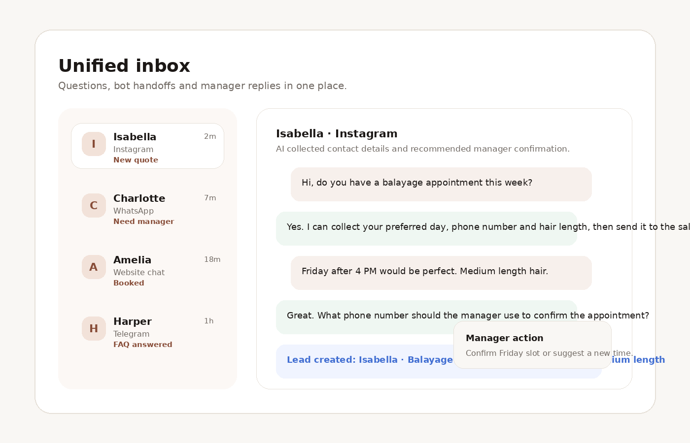

1
Answer from your knowledge base
Services, pricing, opening hours, location, booking rules, promotions and aftercare instructions.
A clean demo landing for selling AI chat assistants to English-speaking beauty businesses. The assistant answers FAQs, qualifies leads and sends ready-to-confirm requests to the team.

Clients often ask the same questions across Instagram, WhatsApp, Messenger, Telegram and website chat. If the first answer comes too late, they usually book somewhere else.
The assistant follows your services, policies and tone of voice. It answers common questions and hands complex cases to a real manager.
Services, pricing, opening hours, location, booking rules, promotions and aftercare instructions.
Name, phone, service, preferred date, preferred time, comments and the channel where the client came from.
Your manager receives a structured lead with context and can confirm, reschedule or take over the conversation.
The original internal files and Russian-market docs were removed. These visuals are lightweight and ready for a public GitHub Pages portfolio.

Use this scenario in sales calls: the client asks about a service, the AI collects details, and the manager receives a clean request.
Use these as public starting prices. Final scope depends on channels, scripts and integrations.
VK and Avito pages were removed because they are not relevant for most English-speaking clients. The remaining pages are easier to sell internationally.
For hair, brows, lashes, cosmetics and mixed beauty services.
Nail studioFor manicures, pedicures, designs, removals and aftercare questions.
BarbershopFor haircuts, beard trims, combos, memberships and walk-in questions.
Yes. This package is fully static: HTML, CSS, JavaScript and images only. Upload it to a repository and enable GitHub Pages.
No. This is a public landing/demo site for selling or presenting the service. The actual bot backend should be connected separately.
Instagram, WhatsApp, Facebook Messenger, website chat and Telegram. Local channels can be added if a specific market needs them.
Yes. The structure is ready for other appointment-based businesses such as spas, clinics, fitness studios or pet grooming.
Send a short message and ask for a tailored demo version for the exact business niche.